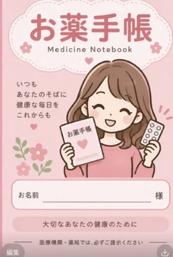

カレンダー
● 受診記録がある日
この日の服用
登録した薬を、飲んだときにチェック。
これまでの受診
記録の保管
この端末に保存しています
記録と写真は、このブラウザの中に保存します。外部へ送信しません。
端末の故障や、ブラウザのデータ削除で失われることがあります。大切な記録は、定期的に控えを保存してください。
別の端末やブラウザには自動で引き継がれません。プライベートブラウズは使わないでください。
写真も含めて戻せます。同じ記録がある場合は、今の記録を残します。控えには健康情報が入っています。大切に保管してください。